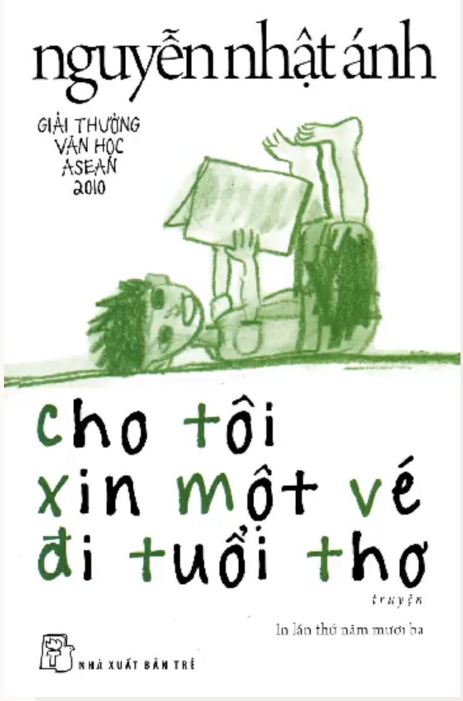
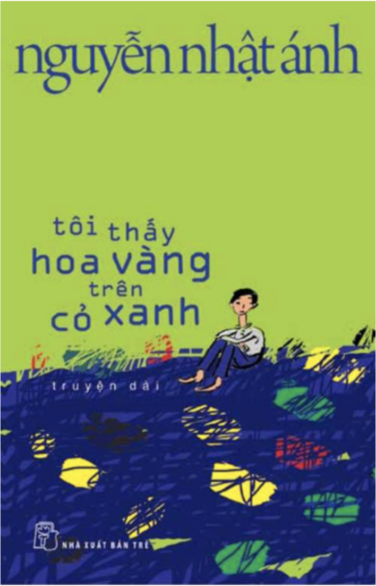
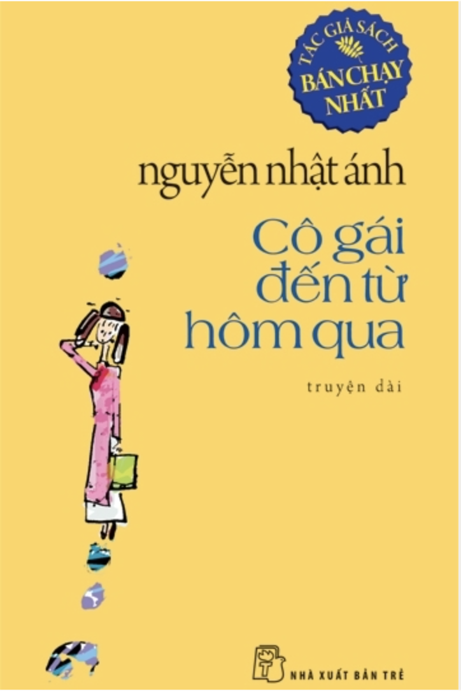
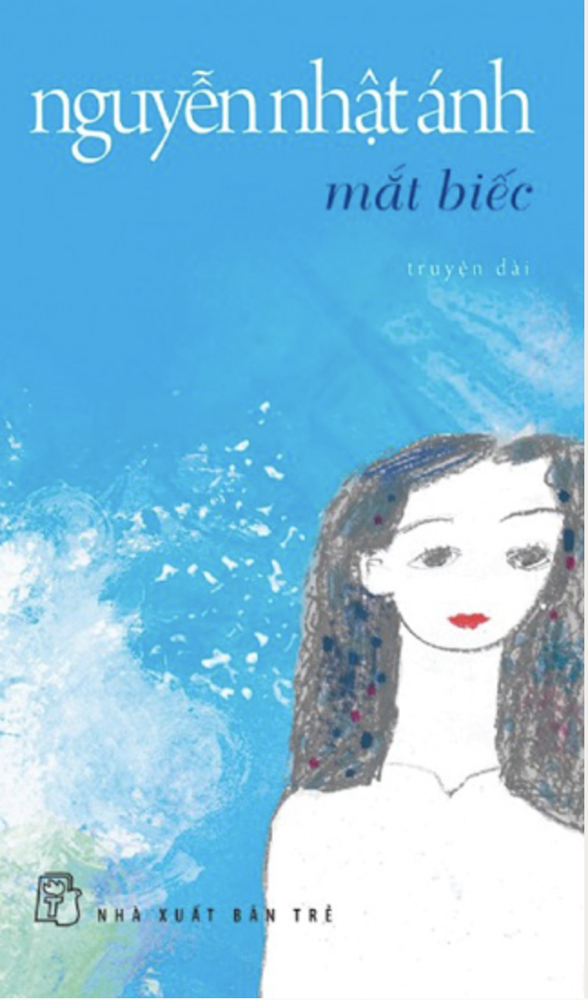

Truyện dài gồm 12 chương ra mắt độc giả Việt Nam vào năm 2008. Cho tôi xin một vé đi tuổi thơ đưa độc giả ngược về năm tháng tuổi thơ với tình bạn trong sáng của bốn đứa trẻ sống cùng xóm là Tủn, Tí, Hải và Mùi.
Chi TiếtĐọc SáchCâu chuyện xoay quanh cuộc đời của anh em Thiều - Tường. Thiều hiếu động, nhiều lần vô tình khiến em trai chịu vạ sau những trò quậy phá do cậu gây ra. Tường sống nội tâm, ham đọc sách, đặc biệt là những câu chuyện cổ tích.
Chi TiếtĐọc SáchTác phẩm kể về mối tình thơ ngây tuổi học trò với hai nhân vật chính là Anh Thư và Tiểu Li. Cô gái đến từ hôm qua đan xen giữa chuyện quá khứ và hiện tại của chàng Thư.
Tác phẩm thuộc loại truyện viết về tình yêu thanh thiếu niên. Câu chuyện xoay quanh chuyện tình cảm của đôi trẻ Ngạn - Lan. Hai người gắn bó với nhau từ thuở ấu thơ. Tình bạn Ngạn dành cho Lan dần trở thành tình yêu thầm lặng.
Chi TiếtĐọc Sách
Nguyễn Trí Tài - 19522572 - Đồ án
cuối kì môn Internet và công nghệ Web - IE104.M11 - Website đọc sách đơn giản